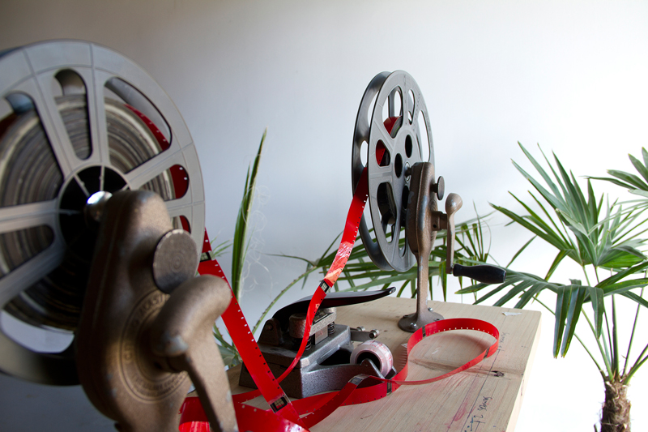
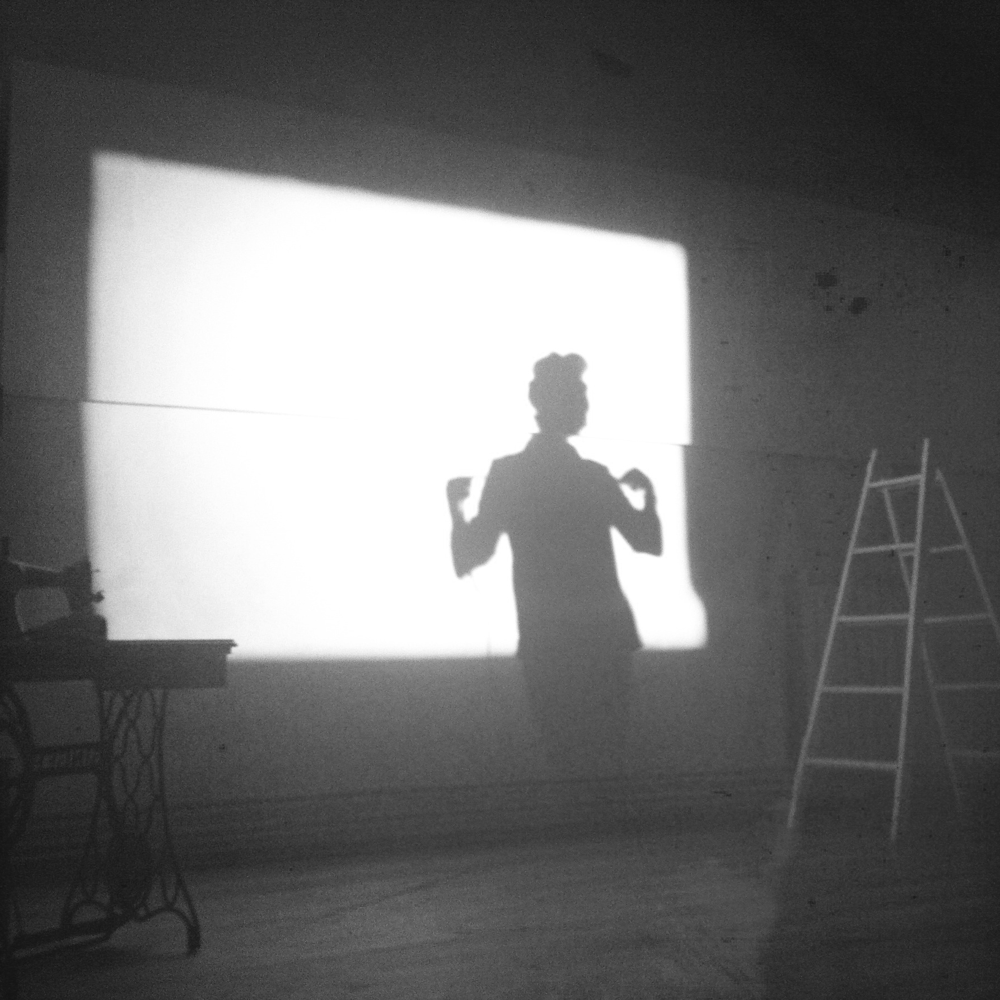
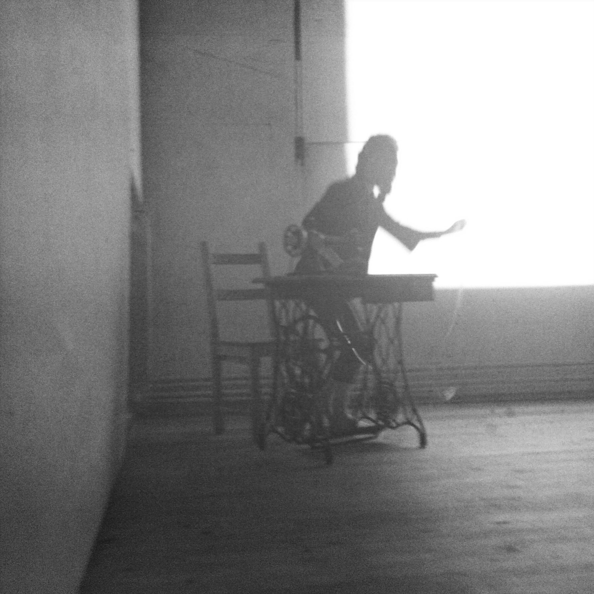
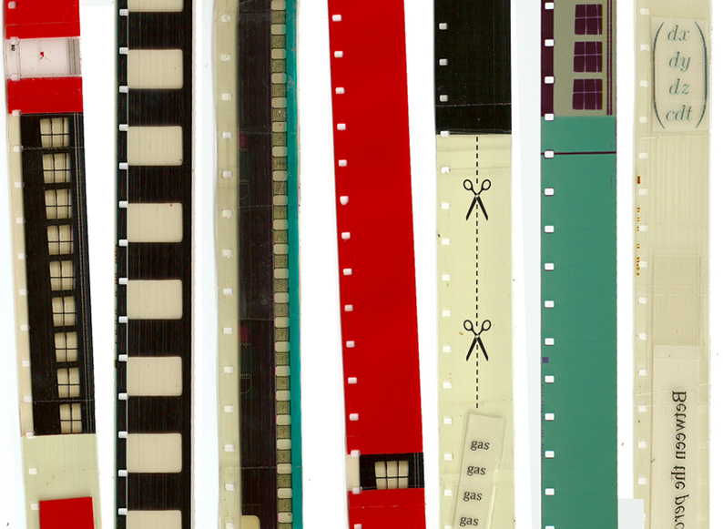

|
 |
|
The Gas Works
2012 — 2013
Performance — environment
Pre-recorded voice-over, sewing machine, gas mask, feather duster, 16mm films and altered loops
«To make one see the molecular intervals,
the holes in sounds and forms.»
(Gilles Deleuze, Cinema 2)
The Gas Works involves projecting the films The Gas Thus Cuts In Bits and The Illuminating Gas, specially conceived for this performance and designed to break during projection. Additional film loops incorporating typewriter and sewing machine sounds were also projected. |
| |
 |
|
In The Gas Works, film is approached as both object and moving-image, and the transition from solid (filmstrip) to gaseous (projection) state is explored with a particular emphasis on the unique instability of the filmstrip and its relationship with its mechanical support, the projector. Solid montage and the application of unorthodox, collage-like editing procedures on the films’ surface derive from both an investigation into optical sound and an understanding and an understanding of projection as sculpture and choreography. In The Gas Works, cinema is literally derailed and subjected to stitching, considered as a structure strongly connected to the mechanics of writing and sewing.
Performance documentation:
https://vimeo.com/65750502
password: alucinavecina |
| |
 |
 |
«The Gas Works involves film projections that are interrupted by Collado's voice and presence in front of or around the screen, addressing the audience and using her body as both sculpture and theater. Her voice channels a seriousness that smells of institutional mandates, revived and mocked in the same gesture. The architectural space between the projector and the screen is revealed, the whole act of cinema is in suspension, in tension, disrupted and replaced by the pleasure of complete presence and alertness. Her radical humor and play inscribe the work in Dada and collage practices.»
— Laida Lertxundi |
| |
|
 |
|
| |
|
 |
Performance view photographs: Alaiz Arenzana and
Garbiñe Ortega
On the left: preparing The Gas Works at The Guesthouse Artists Residency (Cork, Ireland), October 2012 |